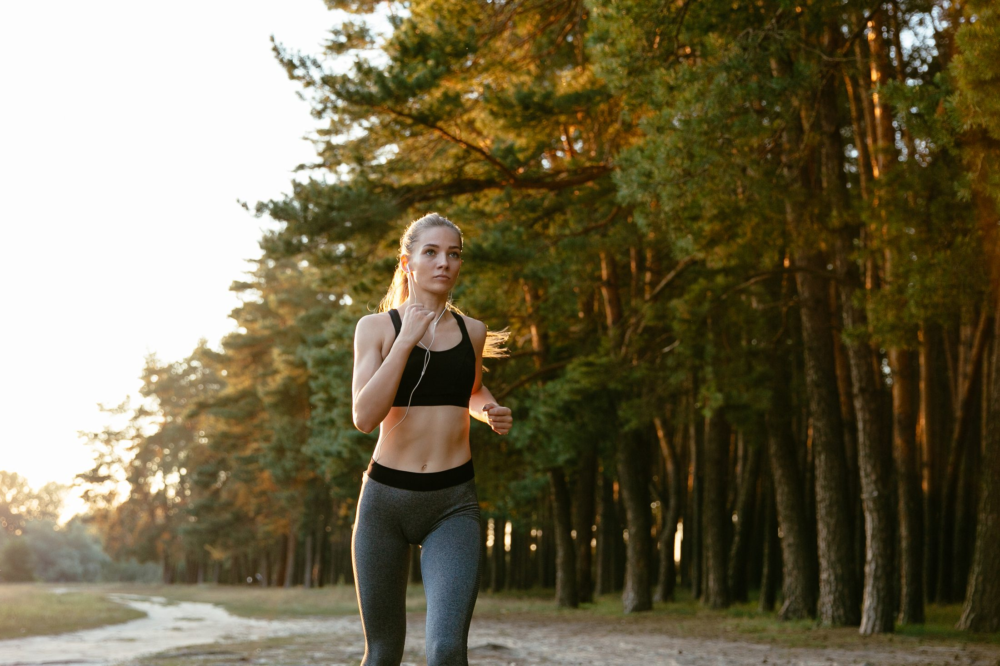
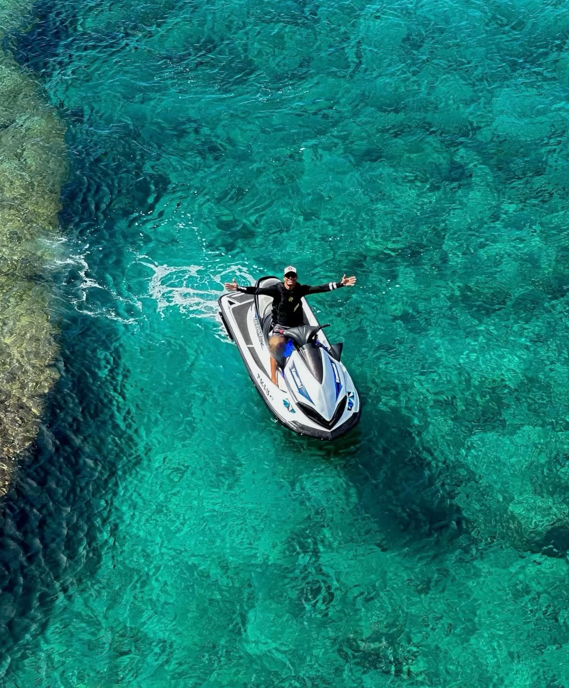
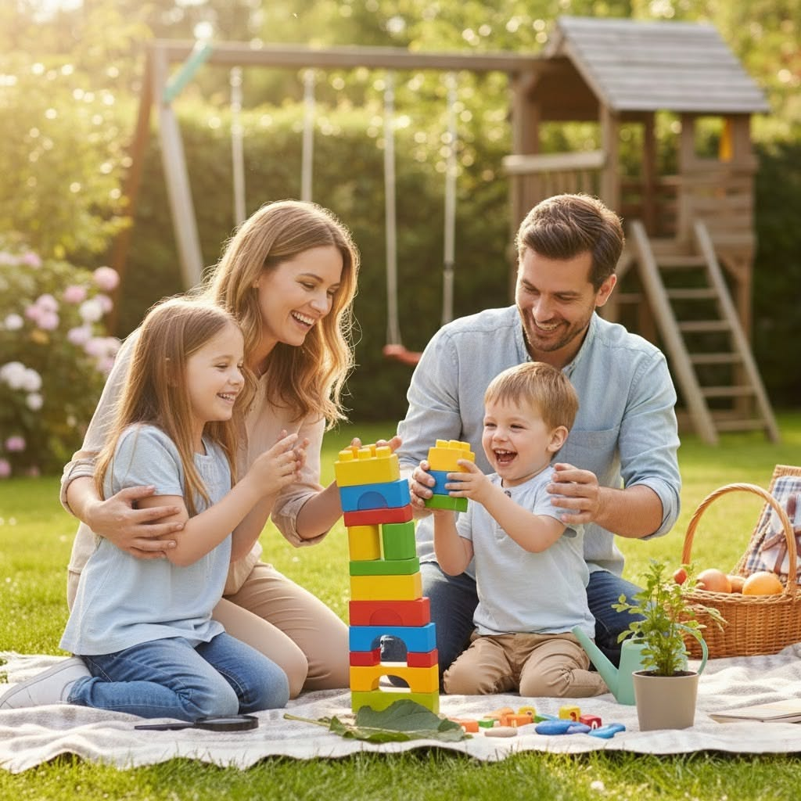
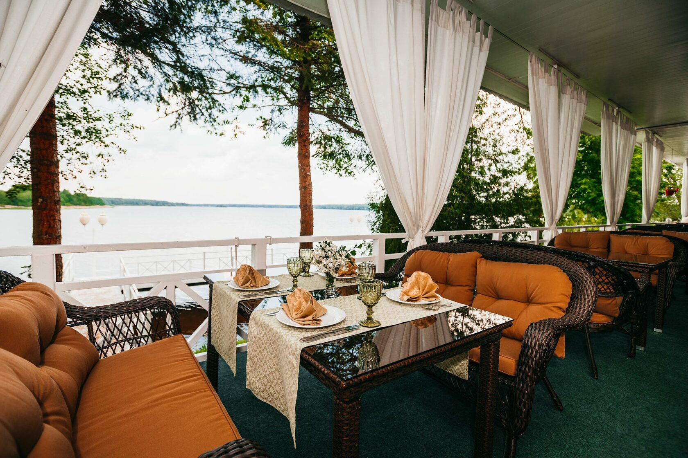
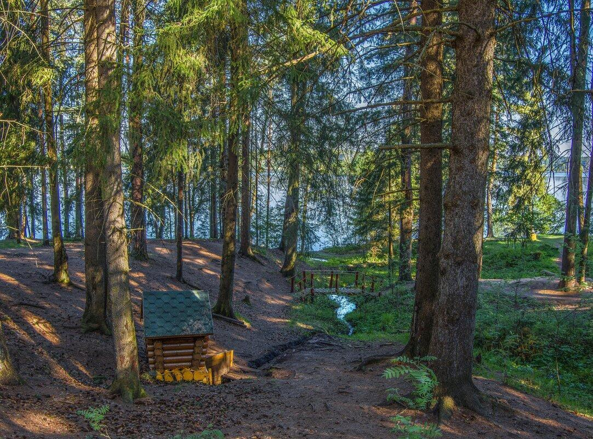
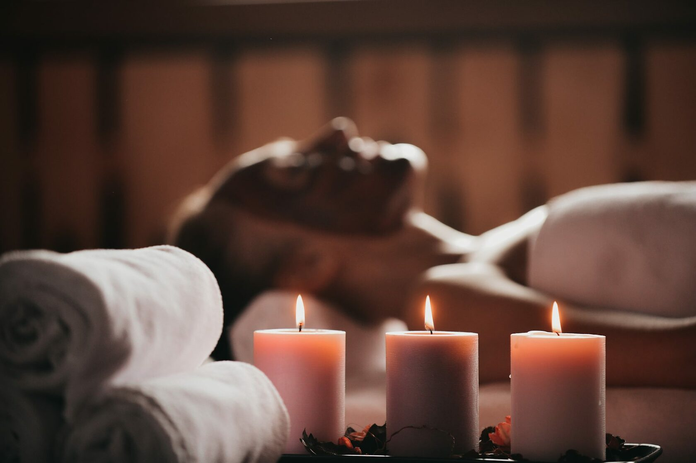
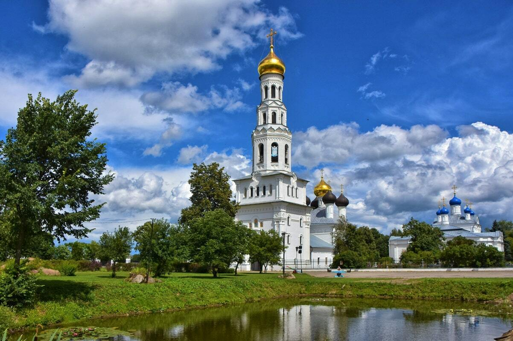
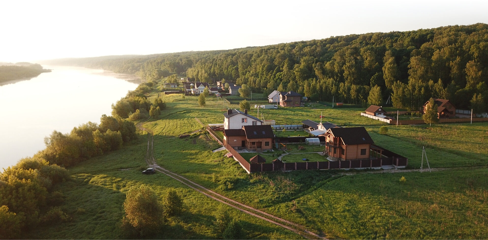

Растущий туристический центр на берегу Волги — по соседству с посёлком.
Курорт Завидово — активно развивающийся туристический центр с развлекательной, спортивной и социальной инфраструктурой. Он достраивается год за годом, и земля вокруг растёт в цене вместе с ним. Гольф, марина, спа, рестораны и аквапарк работают уже сейчас — в десяти минутах от участка.
10 минут до курорта · 1 час от Москвы по М-11

Поле открыто с апреля по ноябрь, и партию назначают на вечер вторника, а не выкраивают под неё выходные. Если гольф не тянет, рядом корт, скалодром и картинг.

Утром вода пустая — это лучшее время для сапа. Днём берут катер, к вечеру выходят под парусом. Яхт-клубы работают с мая по октябрь.

В дождь выручает аквапарк, в ясный день — фермы с оленями и козами. Верёвочный парк открыт со среды по воскресенье; после него дети засыпают сами.

Завтракают у воды, обедают долго и на террасе, ужинают на двоих. Летом на пляже ставят барбекю-шатёр, и вечер затягивается сам собой.

Сосновый бор стоит прямо над водой, вдоль берега идут дорожки, за деревней начинается национальный парк. Прогулка, ради которой не нужно никуда собираться.

Баню берут на компанию в субботу, спа — в одиночку и посреди недели. Тропический бассейн работает круглый год, и в ноябре это чувствуется.

Храмовый комплекс в Завидово стоит прямо по дороге. Дальше — дом Чайковского в Клину и Императорский путевой дворец в Твери: на выходной, который хочется провести не дома.

Посёлок стоит на своём берегу Волги — час от Москвы по М-11 и десять минут до курорта. На гольф, в спа или на ужин у воды выезжают после работы: дорога занимает меньше, чем сборы. А когда возвращаешься, за оградой тихо.
Оставьте имя и телефон — перезвоним, договоримся о встрече и покажем посёлок.
Не готовы оставлять номер? Задать вопрос в WhatsApp
Данные успешно отправлены.